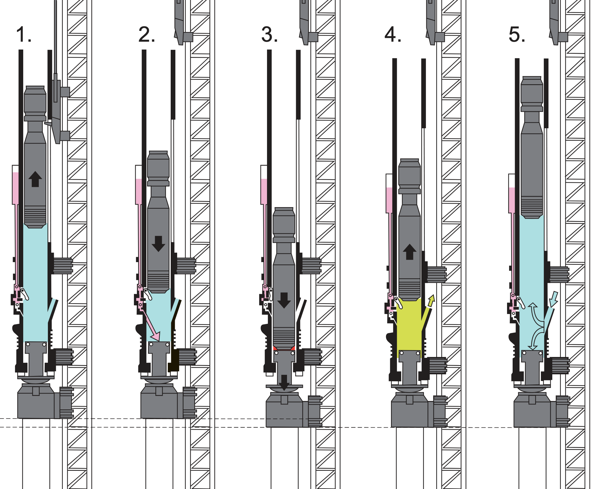

Open-ended diesel hammer combusion
Open-ended diesel hammers consist of a single cylinder containing a heavy piston called a ram. During operation, fuel ignition launches the ram up into the air. When the ram falls back down, it compresses and heats an air/fuel mixture in the piston, reaching its ignition temperature and starting the process over again.
The Diesel hammer combustion enhancement will involve creating a model of the combustion process - the increasing pressure and temperature due to the falling piston, the energy released by fuel ignition, and the resulting displacement of the piston. The model will provide a means of calculating the fuel needed to achieve different piston heights. Combined with a pile-driving log containing blows per minute (BPM) and blows per foot (BPF), the model will show the fuel consumption during the pile-driving process. A mathematical framework for the combustion model will is described below.
The focus of this option is the fuel consumption and carbon emissions for pile installation.
Open-ended diesel hammer illustration
The figure below shows an illustration of an open-ended diesel hammer in five steps (note that we’ll simplify this to 3 phases in our model).
- The piston is raised manually. We will ignore this step (it only happens when the hammer is first started).
- The piston falls. During the first part of this fall, the hammer piston is in freefall. The illustration shows the following piston triggering the fuel injection switch (this will not be included in our model). The apparent open vent on the right hand side of the hammer is the exhaust vent. After the piston drops below the exhaust vent, it compresses the gas in the combustion chamber, increasing pressure and volume.
- Ignition is triggered.
- The piston is launched upwards by the expanding gas in the combustion chamber. After the piston rises above the exhaust event, we will assume that excess pressure is released through the exhaust vent.
- The piston rises until it is slowed to a stop by gravity.

A 3-Phase model for combusion
We will use a simplified 3-Phase model for this combustion process: 1. Piston falling (corresponds to step 2 in the illustration) 2. Combustion event (corresponds to step 3 in the illustration) 3. Piston rising (corresponds to steps 4 and 5 in the illustration)
The model will track several state variables at different times throughout the model. These are expected to change with time throughout the operation of the hammer.
The model will also use several parameters that are not expected to change with time. However, once the model is built, changing the values of parameters will be a way to change the model behavior.
State Variables
- \(h(t)\): piston height above
- \(v(t)\): piston velocity
- \(T\): gas temperature in cylinder
- \(P\): gas pressure in cylinder
Parameters
| Parameter | Description | Default value |
|---|---|---|
| \(h_{0}\) | piston height at the start of Phase 1 | varies |
| \(m_{piston}\) | piston mass | 9072 kg |
| \(A_{piston}\) | piston cross-sectional area | 0.75 m |
| \(V_{min}\) | minimum volume of the combustion chamber when piston height is zero | 7.5e-4 m^3 |
| \(h_{exhaust}\) | exhaust port height | 0.5 m |
| \(V_{fuel}\) | volume of fuel injected per cycle | varies |
| \(\rho_{fuel}\) | fuel density | 832 kg/m^3 |
| \(Q_{fuel}\) | specific energy content of fuel | 44 MJ/kg |
| \(\eta_{combustion}\) | combustion efficiency | 0.4 |
| \(T_{ignition}\) | ignition temperature | 500 K |
| \(T_{ambient}\) | ambient temperature | 300 K |
| \(P_{atm}\) | ambient temperature | 101 kPa |
| \(g\) | gravitational acceleration | 9.81 m/s/s or 32.2 ft/s/s |
UNITS: It’s important to keep track of and convert units as needed. This model uses SI units, but the pile-driving log and the \(S_0\) equation use imperial units.
Phase 1: Piston Falling
The height the piston falls from is \(h_{0}\). We can try different initial values for \(h_0\), but we’ll want to make sure the model works with initial values that are consistent with the final value \(h\) (otherwise our model would indicate a non-functioning hammer). \(h_0 = 2\) meters is a good place to start. The piston falls in freefall with an initial velocity, \(v_0 = 0\).
During freefall, we can use the simple differential equation (ignores drag forces) below to calculate the velocity:
\[\frac{dv}{dt} = g\]
Initially, the base of the piston is above the exhaust ports and its fall has no change on \(P\) or \(T\) in the combustion chamber. Once the piston falls below the exhaust ports, which are at \(h_{exhaust}\), the combustion chamber is closed and the change in piston height induces a change in volume, pressure, and temperature in the combustion chamber.
Under ideal gas compression assumptions,
\[P\cdot V_{cc}^\gamma = \text{constant} \qquad \text{and} \qquad T\cdot V_{cc}^{\gamma-1} = \text{constant} \]
where \(V_{cc} = V_{min} + A_{piston} \cdot h\) is the combustion chamber volume and \(\gamma = 1.4\) for air.
This gives us the following equations describing the changes to pressure and temperature during the compression of the combustion chamber:
Pressure during compression: \[P = P_{atm} \left(\frac{h_{exhaust}}{h}\right)^{\gamma}\]
Temperature during compression: \[T = T_{ambient} \left(\frac{h_{exhaust}}{h}\right)^{\gamma - 1}\]
Once the combustion chamber closes, the piston is no longer in freefall because the pressure builds in the closed system, pushing upwards on the piston. The rate of change of velocity of the piston after the combustion chamber closes can be described by the following differential equation:
\[\frac{dv}{dt} = g - \frac{(P-P_{atm})\cdot A_{piston}}{m_{piston}}\]
This can be solved using Euler’s method and the initial condition of the piston velocity at the time the combustion chamber closed.
Trigger condition: Combustion triggers when the temperature exceeds the ignition temperature: \[T \geq T_{ignition}\]
End of Phase 1
You may assume that Phase 1 ends either when the temperature exceeds the fuel ignition temperature or the height of the piston is zero. At the end of Phase 1, we should know the pressure and temperature in the combustion chamber. If the temperature has exceeded the fuel ignition temperature, Phase 2 will start. Otherwise, the hammer stops operating.
Phase 2: Combustion Event
Once combustion is triggered, energy is released, rapidly increasing the temperature and pressure within the combustion chamber. The amount of energy released depends on the amount of fuel and the type of fuel used.
Energy released: \[E_{combustion} = V_{fuel} \cdot \rho_{fuel} \cdot Q_{fuel} \cdot \eta_{combustion}\]
Simplified pressure spike model: \[P_{peak} = P_{compressed} + \frac{E_{combustion}}{V_{cc}}\]
where \(V_{cc}\) is the volume of the combustion chamber at the time of ignition and \(P_{compressed}\) is the pressure in the combustion chamber at the end of Phase 1.
End of Phase 2
Although the combustion process itself takes (a very small amount of) time, you may assume it happens instantaneously. Under these assumptions, the time at the end of Phase 2 is the same as the time at the beginning of Phase 2, but we have a updated value for the pressure in the combustion chamber that will be used in Phase 3. During combustion, the temperature also increases, but continuing to model temperature is not required, and we will assume that the entire system goes back to ambient temperature.
Phase 3: Piston Rising
Phase 3 is very similar to Phase 1, but in reverse. We start with an initial pressure as calculated at the end of Phase 2. We will use the same differential equation that was used for the velocity of the piston after the combustion chamber closed in Phase 1, but this time the initial velocity condition will be zero.
Additionally, once the height of the piston exceeds the combustion chamber height, we will assume that most of the pressure gets released through the exhaust ports, and the piston is no longer propelled by the combustion pressure. Therefore, we can remove the effect of pressure from the differential equation and use the simplified version again.
End of Phase 3
Phase 3 ends when the piston velocity reaches zero. At the end of Phase 3, we should know the height that the piston reached due to combustion.
Modeling fuel consumption
The 3-Phase combustion model described above can be used to develop a relationship between fuel volume and piston height. The model also gives the time between blows, which we used a simplified free-fall equation to relate to piston height previously. We can either use the time between blows from the 3-Phase combustion model or the previous relationship (how different are they?) to match fuel volume usage to the pile-driving log. We can use the fuel volume / piston height relationship to estimate the fuel used per blow for every value of blows per minute (\(BPM\)) on the driving log.
Don’t forget to calculate the total fuel volume for each foot of driving by multiplying the fuel used per blow by the blows per foot (\(BPF\)).
After the calculations, we will be able to create a fuel consumption log that shows the volume of fuel used per foot of pile driving. And by summing the fuel consumption, we can estimate the total volume of fuel needed to drive a pile based on its pile driving log and our three phase combustion model.